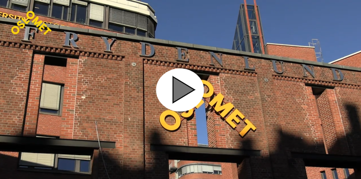

Matematisk modellering og datavitenskap-
ingniør
Bachelorprogram
Få innsikt i matematiske modeller og datadrevne metoder som kan løse mange praktiske og samfunnsnyttige oppgaver.


Studiested
Pilestredet i Oslo

Varighet
3 år

Omfang
Heltid

Studiepoeng
180

Studiestart
August

Undervisningsspråk
Norsk og Engelsk

Studieplasser
40

Kostnad
Studieavgift
⨯
Studiestart
Informasjon om program, timeplaner, pensum, fadderuker og mye mer finner du på studiestartsiden for matematisk modellering og datavitenskap - ingeniør (student.oslomet.no).
NB! Vær obs på at timeplanen som ligger på studiestartsiden er en timeplan for alle studentene på kullet.
For å se din personlige timeplan må du logge deg inn på "Min side" (student.oslomet.no) etter at du har aktivert IT-kontoen din og du er blitt plassert i klasse/gruppe. Dette skjer vanligvis uken før studiestart.
⨯
Opptakskrav og poeng
For å søke på dette programmet må du ha
- Generell studiekompetanse (samordnaopptak.no) eller oppfylle kravene til realkompetanse
- Matematikk R1 og R2
- Fysikk 1
Det kan være konkurranse om plassene. Ved forrige opptak kom alle kvalifiserte søkere inn.
Hvis du mangler generell studiekompetanse eller enkelte fag fra videregående skole, kan du søke på dette studiet om du har bestått ettårig forkurs for ingeniørutdanning.
⨯
Slik søker du
Du søker på Samordna opptak med studiekode 215 503.
- 15. april: ordinær søknadsfrist
- 1. mars: frist for enkelte søkere
⨯
Se programplan på student.oslomet.no
Hva lærer du?
Bachelor i matematisk modellering og datavitenskap kobler sammen matematikk, informatikk, fysikk og statistikk.
Du får innsikt i matematiske modeller som brukes i praktisk problemløsning blant annet i medisinsk kjemi, biologiske prosesser og ulike samfunnssystemer.
Det første studieåret har du emner i blant annet matematikk, programmering, fysikk og kjemi for å få en felles forståelse av tematikken.
Det siste semesteret skriver du en bacheloroppgave tett knyttet til problemstillinger i arbeidslivet.
Første året velger du hvilken av disse spesialiseringene du vil ta.
Du lærer om hvordan du kan bruke målte data koblet med datadrevne og statistiske metoder til å gjøre beregninger, for eksempel av fremtidige strømpriser.
Du lærer hvordan du kan løse komplekse og sammensatte problemer, og utforske høydimensjonale datatyper. Moderne metoder innen maskinlæring og kunstig intelligens står sentralt.
Du lærer å lage effektive algoritmer, datastrukturer og kildekoder for å løse matematiske og fysiske problemer med numeriske metoder.
Du lærer å utvikle kildekode og metodikk knyttet til medisinsk teknologi, biologiske prosesser og annet.
Du utforsker algebraiske strukturer, blant annet knyttet til dyp læring og kunstig intelligens.
Du lærer differensialgeometri på flater, gruppeteori og kodeteori; matematiske strukturer, representasjonsteori og kategoriteori.
I fysikk lærer du om termodynamikk og statistisk fysikk.
⨯
Studiets oppbygging
| 3. Studieår | 5. Semester | 6. Semester |
|---|---|---|
| Fellesemner | Matematikk 3000 DAVE3700 | 10 stp. |
Bacheloroppgave DATA3900 | 20 stp. |
| Matematikk og fysikk | Reell analyse MAMO3300 | 10 stp. |
Testing av programvare ★ ADTS2310 | 10 stp. |
| Introduksjon til IT-forskning ★ DATA3730 | 10 stp. |
Datanettverk og skytjenester ★ DATA2410 | 10 stp. |
|
| Introduction to Data Science with Scripting ★ DATA3800 | 10 stp. |
Ressurseffektive programmer ★ DAVE3606 | 10 stp. |
|
| Datasikkerhet ★ ITPE3100 | 10 stp. |
Avansert modellering og beregninger ★ MAMO2200 | 10 stp. |
|
| Simulering og visualisering ★ MAMO3200 | 10 stp. |
||
| Statistiske og datadrevne metoder | Introduksjon til Kunstig Intelligens DAVE3625 | 10 stp. |
Testing av programvare ★ ADTS2310 | 10 stp. |
| Introduksjon til IT-forskning ★ DATA3730 | 10 stp. |
||
| Anvendt kunstig intelligens og data science prosjekt ★ DATA3750 | 10 stp. |
Datanettverk og skytjenester ★ DATA2410 | 10 stp. |
|
| Datasikkerhet ★ ITPE3100 | 10 stp. |
Ressurseffektive programmer ★ DAVE3606 | 10 stp. |
|
| Simulering og visualisering ★ MAMO3200 | 10 stp. |
||
| Vitenskapelige beregninger | Simulering og visualisering MAMO3200 | 10 stp. |
Visualisering ★ ADSE3200 | 10 stp. |
| Introduksjon til IT-forskning ★ DATA3730 | 10 stp. |
Testing av programvare ★ ADTS2310 | 10 stp. |
|
| Datasikkerhet ★ ITPE3100 | 10 stp. |
Datanettverk og skytjenester ★ DATA2410 | 10 stp. |
|
| Lineær algebra og introduksjon til gruppeteori ★ MAMO2300 | 10 stp. |
Symmetrier og algebraiske strukturer ★ MAMO2500 | 10 stp. |
|
| Reel analyse ★ MAMO3300 | 10 stp. |
||
| 2. Studieår | 3. Semester | 4. Semester |
| Fellesemner | Matematikk 2000 med statistikk DAPE2000 | 10 stp. |
Matematikk 4000 DAVE3705 | 10 stp. |
| Moderne fysikk MAMO2100 | 10 stp. |
||
| Matematikk og fysikk | Lineær algebra og introduksjon til gruppeteori MAMO2300 | 10 stp. |
Termodynamikk og statisk fysikk MAMO2400 | 10 stp. |
| Symmetrier og algebraiske strukturer MAMO2500 | 10 stp. |
||
| Statistiske og datadrevne metoder | Algoritmer og datastrukturer DATS2300 | 10 stp. |
Statistisk analyse MAMO3100 | 10 stp. |
| Visualisering ★ ADSE3200 | 10 stp. |
||
| Avansert modellering og beregninger ★ MAMO2200 | 10 stp. |
||
| Vitenskapelige beregninger | Algoritmer og datastrukturer DATS2300 | 10 stp. |
Ressurseffektive programmer DAVE3606 | 10 stp. |
| Avansert modellering og beregninger MAMO2200 | 10 stp. |
||
| 1. Studieår | 1. Semester | 2. Semester |
| Fellesemner | Diskret matematikk DAPE1300 | 10 stp. |
Matematikk 1000 DAFE1000 | 10 stp. |
| Programmering DAPE1400 | 10 stp. |
Fysikk og kjemi DAPE2101 | 10 stp. |
|
| Teknologi og samfunn for programmerere DATA1100 | 5 stp. |
Databaser DATA1500 | 10 stp. |
|
| Innføring i modeller og beregninger MAMO1100 | 5 stp. |
⨯
Hvordan foregår undervisningen?
Undervisningen er en kombinasjon av
- prosjektarbeid
- workshop
- presentasjoner
- veiledninger
- diskusjoner og refleksjoner
- forelesninger
- selvstudier
- gruppearbeid
- arbeidslivsrelevant bacheloroppgave
For å gjennomføre studiet på normert tid, må du regne med å bruke om lag 40 timer per uke på studierelatert arbeid gjennom hele semesteret.
⨯
Hva kan du jobbe som?
Med dette studiet får du IT-kompetanse som er etterspurt i arbeidslivet, særlig om du velger spesialiseringene vitenskapelige beregninger eller statistiske og datadrevne metoder.
Spesialiseringen i matematikk og fysikk retter seg mer mot videre studier, men også her får du etterspurt kompetanse i arbeidslivet etter bachelorstudiet.
Matematisk modellering og datavitenskap blir stadig viktigere som basisgrunnlag, i for eksempel beregninger knyttet til klima, forsikring og finans, og datadrevne metoder for verdiskaping.
Datadrevne metoder og maskinlæring er i dag svært mye brukt i arbeidslivet.
⨯
Videre studiemuligheter ved OsloMet
Studenthistorier
Teknologi og design
Spå fremtiden med matematikk og datavitenskap
Har du lyst til å finne ut hva som vil skje i fremtiden? Lær å bruk verktøy for å forutsi alt fra været til strømprisene til utviklingen i bolig markedet.

Faglig leder
Spørsmål om utdanningen?
Har du spørsmål om utdanningen, kontakt oss gjennom vårt kontaktskjema.
Du er kanskje også interessert i disse?
Anvendt datateknologi
Bachelorprogram3 årPilestredet i OsloHeltid
Bioteknologi- og kjemiingeniør
Bachelorprogram 3 år Pilestredet i Oslo Heltid
Byggingeniør
Bachelorprogram 3 år Pilestredet i Oslo Heltid
Dataingeniør
Bachelorprogram 3 år Pilestredet i Oslo Heltid
Elektronikkingeniør
Bachelorprogram 3 år Pilestredet i Oslo Heltid
Informasjonsteknologi
Bachelorprogram 3 år Pilestredet i Oslo Heltid
Maskiningeniør
Bachelorprogram 3 år Pilestredet i Oslo Heltid
Tre-terminsordning til ingeniørutdanning
Bachelorprogram 3 år Pilestredet i Oslo Heltid
Spørsmål?
NB! ikke legg igjen personlig info
Hendvendelser blir ikke svart.